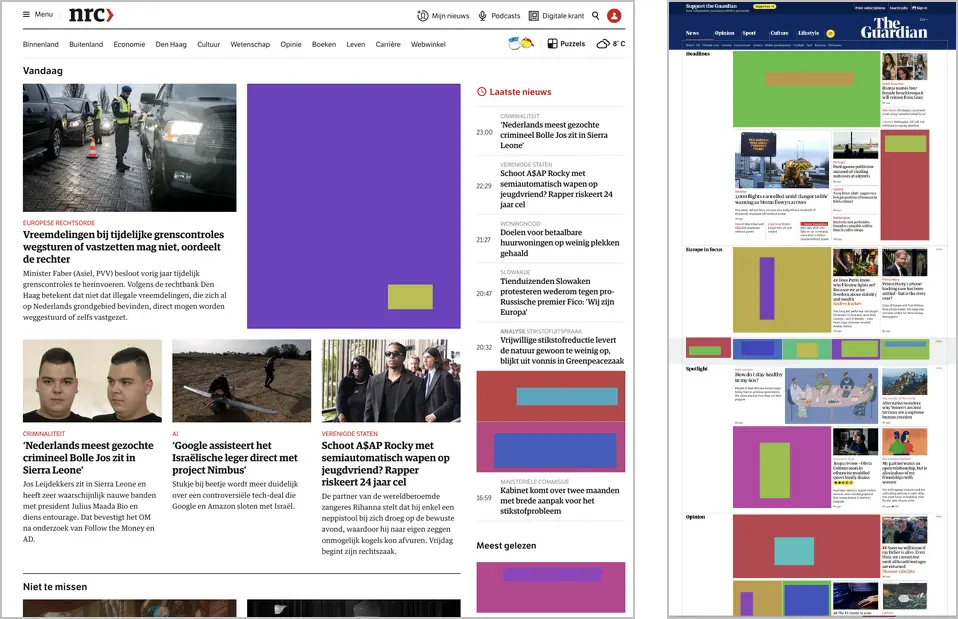

I stopped reading news sites when people like wilders in the Netherlands, and trump and musk in the US, managed to take over the news completely. It stressed me out. That’s why I made this plugin.
This plugin replaces all news items that mention these people’s names with inert, coloured rectangles. It helps with keeping me sane. It should also help newspapers with understanding that they give way too much attention to a few corrupt men.

The add-on only works on gecko browsers (firefox). You can install it via this link. I am not going to make a chrome version because I don’t want a google account. If you want a chrome extension, or a safari version, try to make one yourself.
So far the following news site are supported:
If you want more news sites, let me know, I’ll try to add them.
If you think more strings should be on this list, let me know. I might consider them.